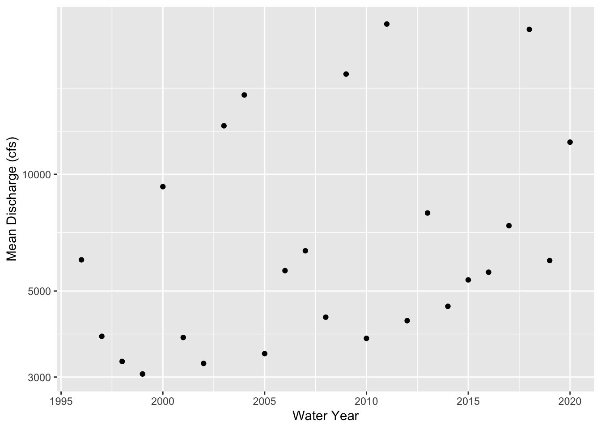
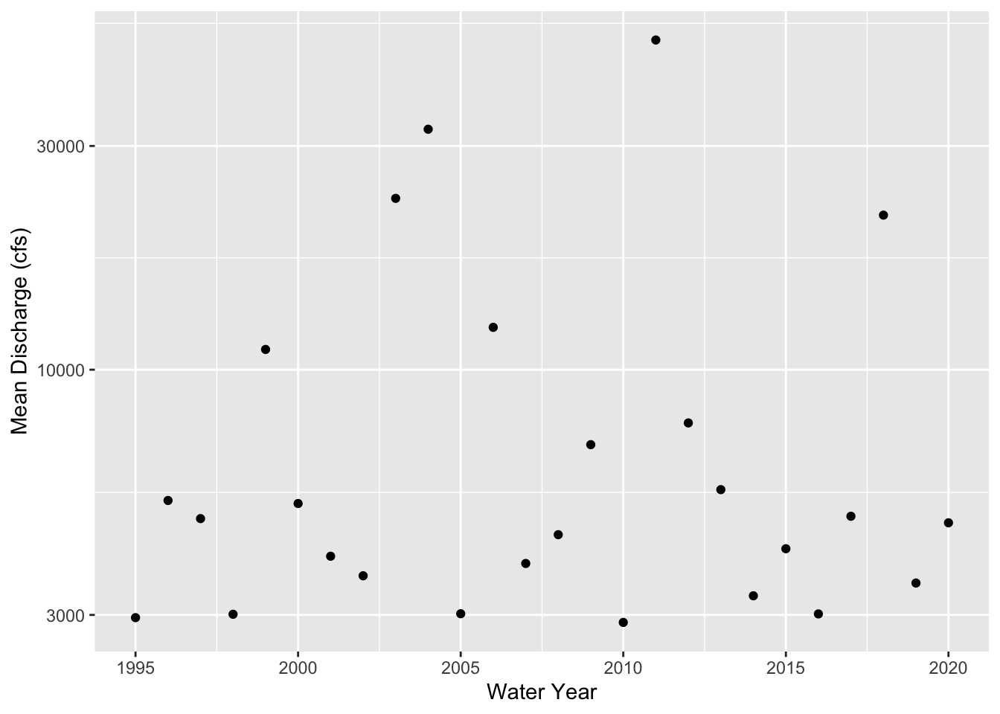

3 Is there a trend in discharge at my site?
3.1 Methods
3.1.1 Download data
site_no <- "01463500"
q <- readNWISdv(siteNumbers = site_no,
parameterCd = '00060',
startDate = '1995-09-30',
endDate = '2021-01-01') %>%
rename(q_cfs = X_00060_00003) %>%
addWaterYear(.) %>%
select(-agency_cd, -X_00060_00003_cd)
head(q)## site_no Date waterYear q_cfs
## 1 01463500 1995-09-30 1995 2960
## 2 01463500 1995-10-01 1996 2800
## 3 01463500 1995-10-02 1996 2560
## 4 01463500 1995-10-03 1996 2580
## 5 01463500 1995-10-04 1996 2560
## 6 01463500 1995-10-05 1996 3180###Monthly averages
q_month_means <- q %>%
mutate(month = month(Date),
year = year(Date)) %>%
group_by(year, month) %>%
summarize(q_mean = mean(q_cfs, na.rm = T),
q_min = min(q_cfs, na.rm = T),
q_median = median(q_cfs))## `summarise()` has grouped output by 'year'. You can override using the `.groups` argument.head(q_month_means)## # A tibble: 6 x 5
## # Groups: year [2]
## year month q_mean q_min q_median
## <dbl> <dbl> <dbl> <dbl> <dbl>
## 1 1995 9 2960 2960 2960
## 2 1995 10 11103. 2560 6370
## 3 1995 11 18104. 8640 13300
## 4 1995 12 7585. 4910 6930
## 5 1996 1 32174. 4500 6150
## 6 1996 2 20096. 8060 16100##Trends in September
q_sept <- q_month_means %>%
filter(month == 9)
ggplot(q_sept, aes(x = year, y = q_mean)) +
geom_point() +
scale_y_log10()+
ylab('Q (cfs)') +
xlab('Water Year')
##Test for trends
mk.test(log10(q_sept$q_mean))##
## Mann-Kendall trend test
##
## data: log10(q_sept$q_mean)
## z = 0.13225, n = 26, p-value = 0.8948
## alternative hypothesis: true S is not equal to 0
## sample estimates:
## S varS tau
## 7.000000e+00 2.058333e+03 2.153846e-02sens.slope(log10(q_sept$q_mean))##
## Sen's slope
##
## data: log10(q_sept$q_mean)
## z = 0.13225, n = 26, p-value = 0.8948
## alternative hypothesis: true z is not equal to 0
## 95 percent confidence interval:
## -0.01243574 0.01360223
## sample estimates:
## Sen's slope
## 0.0003784566#1 cfs per year
sens.slope((q_sept$q_mean))##
## Sen's slope
##
## data: (q_sept$q_mean)
## z = 0.13225, n = 26, p-value = 0.8948
## alternative hypothesis: true z is not equal to 0
## 95 percent confidence interval:
## -127.2727 135.4444
## sample estimates:
## Sen's slope
## 2.8Describe the trend here:
There does not seem to be a specific trend for the month of September at this site on the Delaware River. It does look like the best fit line would be a straight line around 225 cfs, with some outliers that are either much higher or lower. The reason for there not being much of a trend here is due to how large the Delaware River is, making it difficult for it to be affected by anything.
##Trend for a different month - August
q_aug <- q_month_means %>%
filter(month == 8)
ggplot(q_aug, aes(x = year, y = q_mean)) +
geom_point() +
scale_y_log10()+
ylab('Q (cfs)') +
xlab('Water Year')##Plot of all months with minimum and median Q (alter summarize fxn)
#Mean
ggplot(q_month_means, aes(x = year, y = q_mean)) +
geom_point() +
facet_wrap(~month, scales = 'free') +
scale_y_log10()
#Minimum
ggplot(q_month_means, aes(x = year, y = q_min)) +
geom_point() +
facet_wrap(~month, scales = 'free') +
scale_y_log10()
#Median
ggplot(q_month_means, aes(x = year, y = q_median)) +
geom_point() +
facet_wrap(~month, scales = 'free') +
scale_y_log10()
Describe what you see here without a trend test:
At this site in the Delaware River at Trenton, there are not many trends that can be seen over the months. For the mean, the values are all over the place and the only kind of trends would be straight lines with outliers. For the minimum values, the data seems to be a little more consise than with the mean values. So it would be easier to put a trend line in, but it is still all over the place where I can’t say whether the values are increasing or decreasing. For the median values, they are also all over the place like with the mean values. In March, April, and September there is a slight increasing trend that can be seen. The rest have no trends due to the Delaware River being so large.
#Exploring specific conductivity trends
site_no <- "01463500"
q <- readNWISdv(siteNumbers = site_no,
parameterCd = '00095',
startDate = '1995-09-30',
endDate = '2021-01-01') %>%
rename(q_cfs = X_00095_00003) %>%
addWaterYear(.) %>%
select(-agency_cd, -X_00095_00003_cd)q_month_means2 <- q %>%
mutate(month = month(Date),
year = year(Date)) %>%
group_by(year, month) %>%
summarize(q_mean = mean(q_cfs, na.rm = T),
q_min = min(q_cfs, na.rm = T),
q_median = median(q_cfs))## `summarise()` has grouped output by 'year'. You can override using the `.groups` argument.ggplot(q_month_means2, aes(x = year, y = q_mean)) +
geom_point() +
facet_wrap(~month, scales = 'free') +
scale_y_log10()
The specific conductance data also does not show much of a trend throughout the year. However, if you look at them closely, most do seem to have a slight increase in their values.